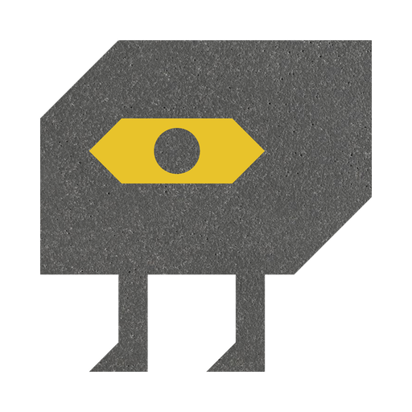

CONVERTIKON is on its way to end your metric–imperial pain.
A desktop converter for architects, designers and construction. Millimetres to feet and inches and back, with real fractions. Coming to Mac and Windows.


A desktop converter for architects, designers and construction. Millimetres to feet and inches and back, with real fractions. Coming to Mac and Windows.